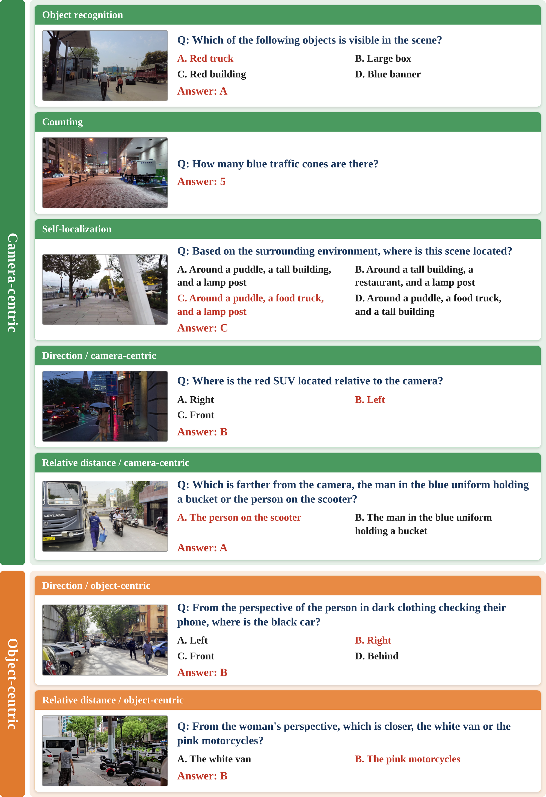
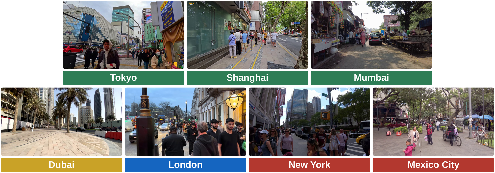
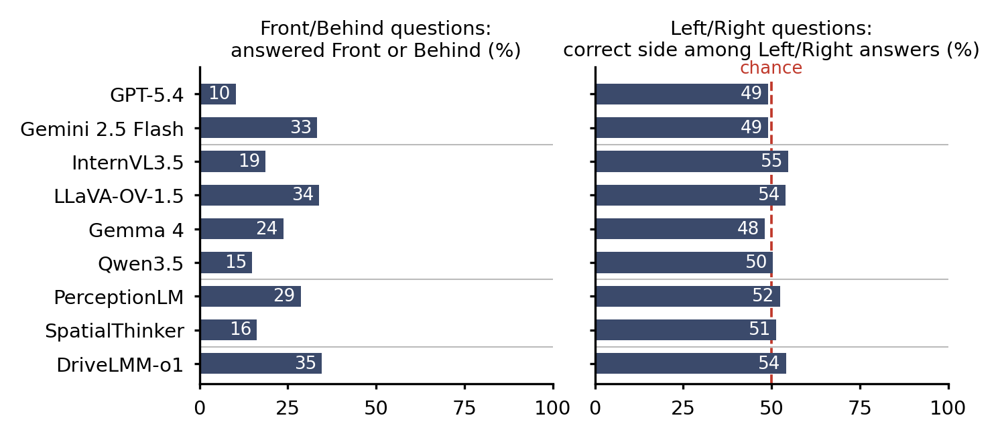
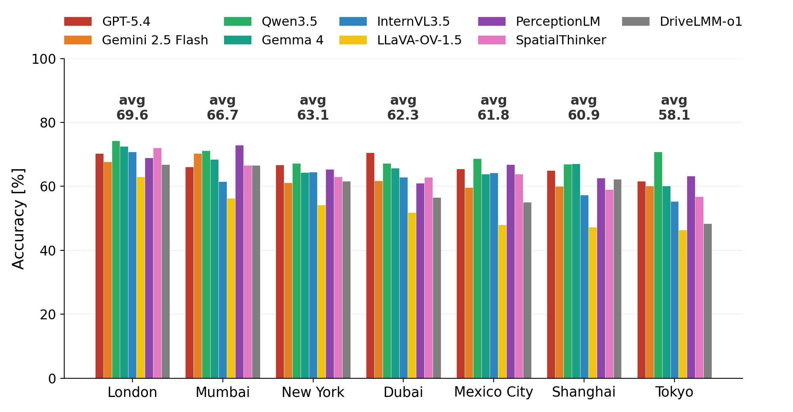
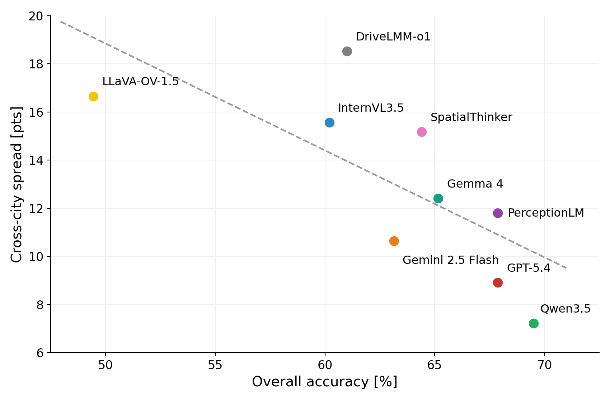

Abstract
Embodied agents navigating urban streets require the ability to perceive and spatially reason about their surroundings. Beyond reasoning relative to the camera, they also need to reason relative to objects in the scene. To measure these abilities, we introduce UrbanStreetVQA, a pedestrian-viewpoint VQA benchmark of 1,731 human-verified questions across seven cities and seven categories, covering perception and directional and relative-distance reasoning posed under both a camera-centric and an object-centric frame. Object-centric reasoning has been studied mainly in indoor scenes or on general images. Meanwhile, urban benchmarks have mostly adopted vehicular, aerial, or satellite views, leaving the pedestrian viewpoint in real outdoor streets largely unexplored. On this benchmark, we evaluate representative VLMs under a circular-evaluation protocol and find that object-centric direction estimation collapses consistently, often falling below chance, whereas perception and camera-centric reasoning are handled comparatively well.
The benchmark
Every question is posed on a single frame from real street-walking footage, filmed at eye level along a pedestrian's path. Three categories test perception. Direction and relative distance are each asked twice: once relative to the camera, and once from the viewpoint of a person in the scene. Comparing the two separates what a model sees from whether it can change viewpoint.
Camera-centric
- Object recognition
- Which objects are visible in the scene?
- Counting
- How many instances of an object appear in a dense street?
- Self-localization
- Where is the camera, judging from its surroundings?
- Direction
- Where is the target relative to the camera?
- Relative distance
- Which of two targets is closer to or farther from the camera?
Object-centric
- Direction
- From a person's perspective, where is the target? When the person faces the camera, their left and right are flipped.
- Relative distance
- From a person's perspective, which of two targets is closer?
Object-centric answers are not generated by a model. They are derived geometrically from detected objects, relative depth, and the reference person's body orientation, and then checked by human annotators.

Seven cities
35 walking videos, about 31 hours in total: Tokyo, Shanghai, Mumbai, Dubai, London, New York, and Mexico City. At least 20 questions are kept for every city and category, and the correct option is balanced across answer positions.

Results
Accuracy (%) under circular evaluation: a multiple-choice question counts as correct only if the model picks the right answer under every rotation of the option order. Counting is scored by exact match.
Scroll the table sideways to see all categories.
| Model | Camera-centric | Object-centric | All | |||||
|---|---|---|---|---|---|---|---|---|
| Obj. recog. | Count | Self-loc. | Dir. | Dist. | Dir. | Dist. | ||
| Proprietary models | ||||||||
| GPT-5.4 | 82.2 | 61.3 | 61.4 | 78.6 | 84.7 | 17.8 | 78.9 | 67.9 |
| Gemini 2.5 Flash | 85.5 | 49.3 | 72.9 | 66.9 | 84.7 | 19.0 | 62.5 | 63.1 |
| Open models | ||||||||
| InternVL3.5-8B | 83.6 | 64.0 | 72.1 | 47.2 | 83.6 | 22.7 | 66.4 | 60.2 |
| LLaVA-OV-1.5-8B | 84.9 | 38.2 | 59.3 | 35.9 | 75.1 | 17.0 | 55.9 | 49.5 |
| Gemma 4-12B | 83.6 | 56.0 | 75.7 | 64.9 | 85.0 | 22.3 | 75.0 | 65.2 |
| Qwen3.5-9B | 86.2 | 70.2 | 70.7 | 71.2 | 82.7 | 32.0 | 75.7 | 69.5 |
| Spatial perception models | ||||||||
| PerceptionLM-8B | 88.2 | 52.0 | 68.6 | 75.3 | 87.8 | 31.2 | 61.2 | 67.9 |
| SpatialThinker-7B | 78.9 | 60.9 | 63.6 | 66.0 | 85.0 | 27.9 | 62.5 | 64.4 |
| Autonomous-driving model | ||||||||
| DriveLMM-o1-8B | 72.4 | 49.3 | 51.4 | 66.5 | 83.0 | 22.7 | 70.4 | 61.0 |
| Human (5 annotators) | 94.3 | 93.3 | 93.3 | 98.1 | 91.4 | 88.6 | 96.2 | 93.6 |
F1Object-centric direction collapses for every model
No model exceeds 32.0% on object-centric direction, and six of nine fall below the 25% chance rate, while humans reach 88.6%. The same models handle direction relative to the camera far better, so the failure lies in changing viewpoint, not in seeing the scene. Models specialized for spatial perception or driving collapse just the same.
F2The errors are systematic, not random
Decoding every trial shows two failure axes shared by all nine models. When the answer is Front or Behind, models mostly answer Left or Right instead. When the answer is Left or Right, they pick the correct side only 48–55% of the time, which is chance: they cannot tell the person's left from their right. They also give the same direction across all option orders for 37.7–84.1% of questions, far above the 1.6% expected from random answering.

F3Stronger models vary less across cities


A model's gap between its best and worst city tends to shrink as its overall accuracy rises: the weakest model, LLaVA-OneVision-1.5, varies by 16.7 points across cities, and the strongest, Qwen3.5, by only 7.2. City difficulty itself is shared across models: averaged over nine models, accuracy ranges from 69.6% in London to 58.1% in Tokyo.
F4Fine-tuning helps, but does not close the gap
Fine-tuning Qwen3.5 on separate training data quickly lifts camera-centric direction above 90%. Object-centric direction improves only when the vision encoder is also trained, from 32.0% to 40.1%, and still trails camera-centric direction under the same setting (93.5%) by a wide margin. Viewpoint change seems to need methods that use geometric cues such as a person's orientation more explicitly.
Data release
The frames come from publicly available walking videos on YouTube. To respect the rights of the original uploaders, we do not redistribute raw frames. Instead, we release everything needed to rebuild the benchmark:
- source video IDs and timestamps
- frame-extraction scripts
- all QA annotations
- evaluation code, including circular evaluation
The benchmark is for research on spatial reasoning only. It is not intended for identifying, tracking, or targeting individuals, and annotations about people are limited to coarse geometry such as body orientation and relative position.
Citation
@inproceedings{huang2026urbanstreetvqa,
title = {UrbanStreetVQA: A Benchmark for Visual Understanding of Urban Street Views},
author = {Huang, Ziliang and Kurihara, Kosuke and Aizawa, Kiyoharu and Hamamoto, Takayuki},
booktitle = {Proceedings of the Asian Conference on Computer Vision (ACCV)},
year = {2026}
}